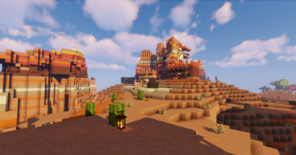
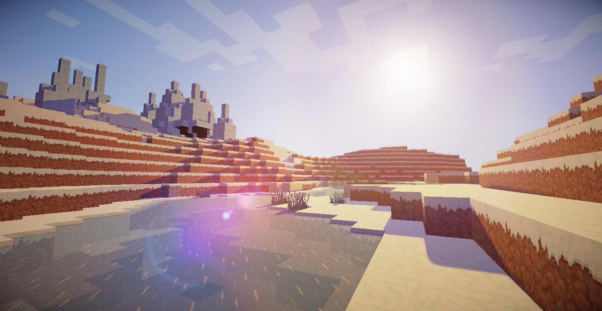
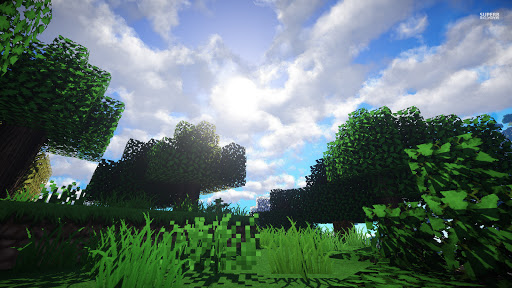

¡BIENVENIDO A TU AVENTURA EXPLORADOR!
Aqui encontraras todo lo que esta en tu exterior tus biomas favoritos y algunos que quizas no conozcas, pero despues de ver esto descubriras muchos mas.
Lo último de mi blog
"Recuerda que es solo un juego"

"Descubre zonas nuevas"
Aqui podras observar los biomas que existen dentro del juego

Mesa

Taiga Fria

Bosque